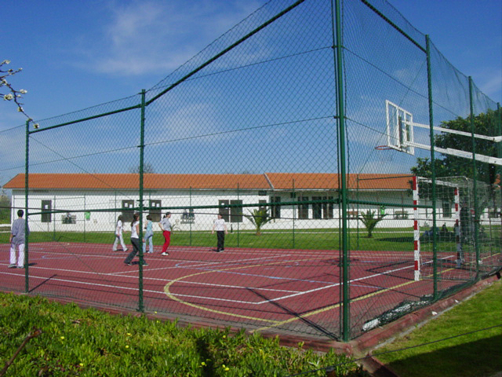
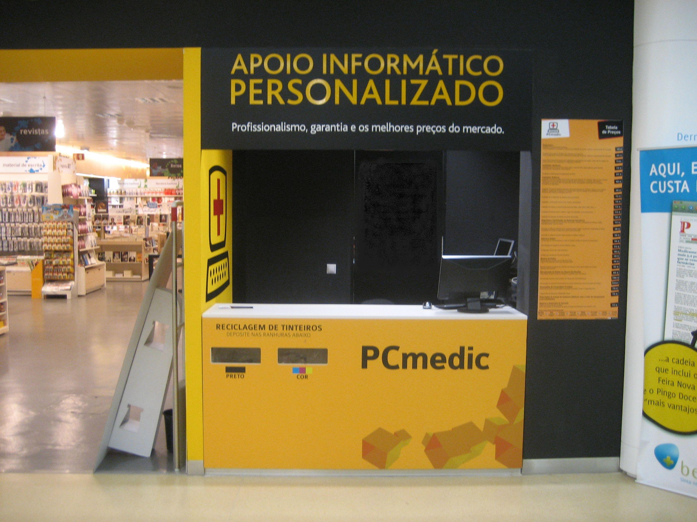
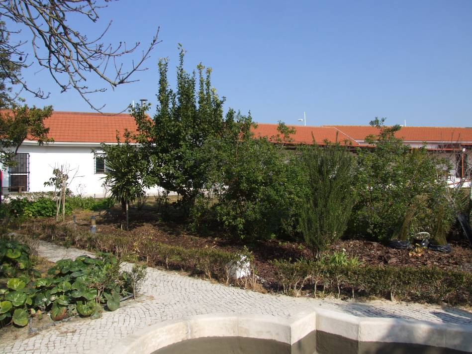

Cursos Profissionais - Regime Diurno

Técnico de Gestão e Programação de Sistemas Informáticos
Técnico de Análise Laboratorial
Animador Sociocultural
Técnico de Gestão do Ambiente
Técnico de Gestão
Técnico de Electrónica e Telecomunicações
CONDIÇÕES DE MATRÍCULA
• Não ter até 31-07-2011 mais de 25 anos
• Ter o 9ºano ou equivalente
• Não ter concluído o 12º ano ou curso com qualificação equivalente
CONDIÇÕES DE FREQUÊNCIA
• Matrícula : 50 euros
• Seguro escolar: 4,26€
Entrevista a um Profissional
Um grupo de jovens deslocou-se até à empresa PCMEDIC e entrevistou um profissional . O seu nome é David Gramito, tem 40 anos e está ligado à área de informática desde 1992 , altura em que despertou em si o interesse pela informática. Apesar de ser formado em Turismo em Hotelaria, nunca o exerceu. Começou a trabalhar como escriturário e mais tarde, entrou na área da Restauração até ao ano de 2000. Abriu então a sua loja de informática , a Ceunet com venda ao público, online, além de prestar qualquer tipo de assistência à informática. Em Maio de 2009, conheceu a PCMEDIC, empresa que presta apoio informático à maioria dos ISP’s em Portugal, tais como ZON, SAPO, Cabovisão, MEO, Optimus entre outros parceiros. Iniciou-se como operador técnico, seguindo depois para Supervisor, e Gestor de Domicílios e de Lojas, cargos que ocupa actualmente para além de Gestor de Frota. Vê a vida dele aqui
Projeto Ambiologico
No âmbito do projecto Ambiológico (projecto do curso de Técnicos de Gestão do Ambiente e que envolve um conjunto de actividades com as turmas dos 3 anos do referido curso), iniciaram-se os trabalhos de preparação do terreno destinado a receber a horta biológica da escola. A turma P16 (2º ano de TGA), depois de uma fase de planificação das actividades, começou a sentir na pele (e nos músculos) a dureza do trabalho agrícola: arranque de daninhas, poda de árvores, retirada de arbustos, transplante de herbáceas, enfim, trabalho árduo mas, ao mesmo tempo, prazeroso.
-
Revistas e Livros
Já podes aceder aos livros e revistas mais recentes na tua biblioteca!

-
Bar da Escola
Movimento TWIST
Entrega no bar pilhas que não utilizes e poupa energia!
-
Horários
SECRETARIA09.30h às 12.30h e 14.00h às 16.30h
CONTABILIDADE09.50h às 12.00h e 14.00h às 16.30h
CENTRO DE RECURSOS09.00h às 17.30h
REPROGRAFIA08.45h às 13.00h 14.00h às 18.00h
-
Mantem-te em contacto!
Email:
info@eped.ptMorada:
Largo Bulhão Pato, nº 56
2825-114 Monte de Caparica
Quinta da TorreTelefone:
+351 212 946 040